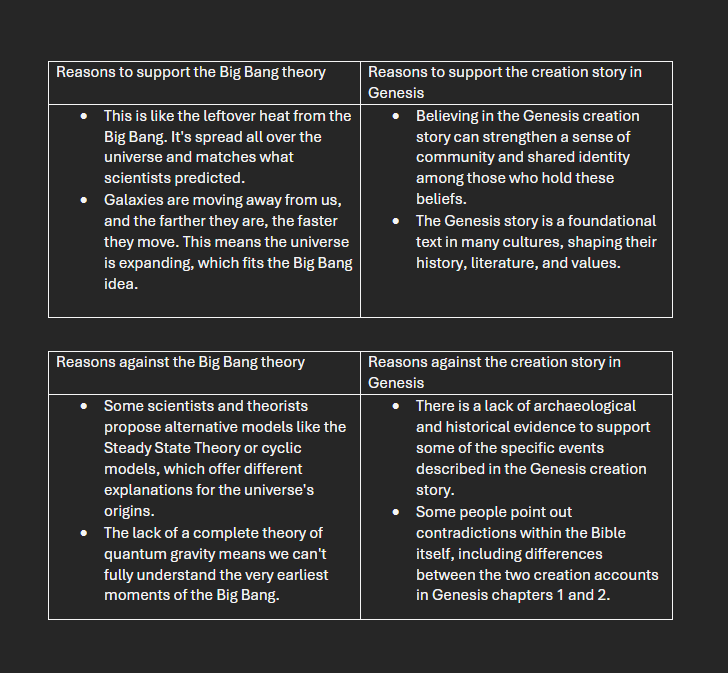

Week 5: PRE Homework
Reasons to support the Big Bang theory
- This is like the leftover heat from the Big Bang. It's spread all over the universe and matches what scientists predicted.
- Galaxies are moving away from us, and the farther they are, the faster they move. This means the universe is expanding, which fits the Big Bang idea.
Reasons to support the creation story in Genesis
- Believing in the Genesis creation story can strengthen a sense of community and shared identity among those who hold these beliefs.
- The Genesis story is a foundational text in many cultures, shaping their history, literature, and values.
Reasons against the Big Bang theory
- Some scientists and theorists propose alternative models like the Steady State Theory or cyclic models, which offer different explanations for the universe's origins.
- The lack of a complete theory of quantum gravity means we can't fully understand the very earliest moments of the Big Bang.
Reasons against the creation story in Genesis
- There is a lack of archaeological and historical evidence to support some of the specific events described in the Genesis creation story.
- Some people point out contradictions within the Bible itself, including differences between the two creation accounts in Genesis chapters 1 and 2.
Back to Home
